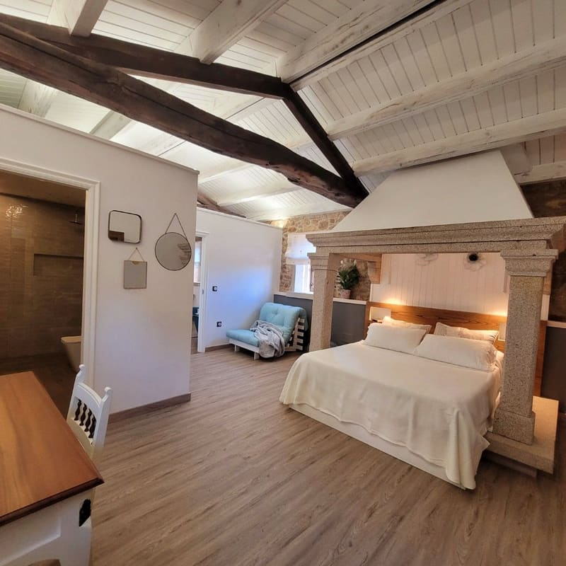
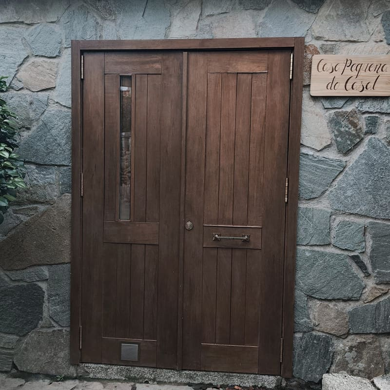
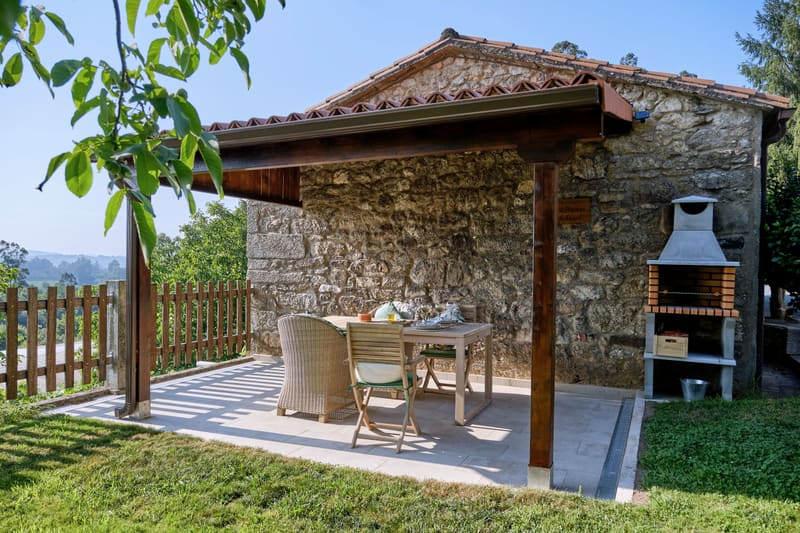

Aparte, para dos
Casa Pequena do Casal
Su abuelo deshizo un palomar para poner aquí el lagar. Después fue el sitio del tractor y la mesa de herramientas de su padre, la bodega con lareira donde se siguió haciendo vino y la sala de juegos. Hoy es una casita de 50 m² para dos. La cama de 1,60 duerme bajo la lareira, donde antes estaba el fuego de la casa. Cocina con horno y lavavajillas, suelo radiante, aire acondicionado y flores frescas. Fuera, su propio jardín con pérgola y barbacoa.
La cama, por su altura, no es para personas con problemas de movilidad. Hay un sofá cama si vienes con un peque.
Preguntar por la Casa Pequena